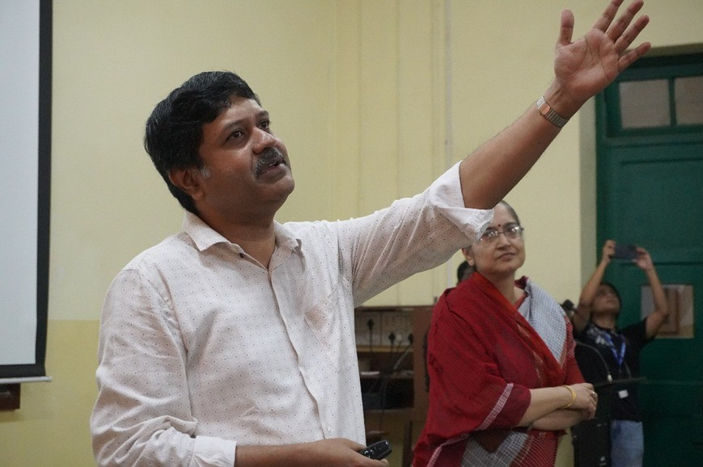
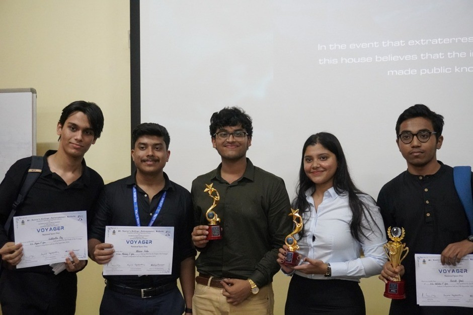

St. Xavier's College (Autonomous), Kolkata, inaugurated the 2024–25 session of the Xaverian Astronomical Society (XAS) on 27th September 2024 with an event titled Voyager, organised in celebration of National Space Day, observed on 23rd August 2024. The event was jointly organised by the Postgraduate and Research Department of Physics and XAS, in collaboration with the Xaverian Debating Society, marking a promising beginning to the new academic year.

The proceedings began with a heartfelt address by Reverend Dr. Dominic Savio SJ, Father Principal of St. Xavier’s College (Autonomous), Kolkata, whose words set a warm and inspiring tone for the day. This was followed by the much-awaited unveiling of the XAS website, after which Father Principal felicitated the guest speaker, Dr. Ritaban Chatterjee.
The event continued with addresses by Dr. Suparna Roychowdhury, Deputy President of XAS, and Dr. Shibaji Banerjee, Head of the Department of Physics and Assistant Director of the Father Eugene Lafont Observatory. Their constant guidance and support for XAS were acknowledged with gratitude. The programme segment concluded with a sincere vote of thanks delivered by the Student Secretary, Sanchari Sen.

Dr. Ritaban Chatterjee, Assistant Professor at the School of Astrophysics, Presidency University, delivered an engaging lecture titled “Astrophysics: The Indian Frontier and Vision.” Beginning with a discussion on the scale of the known universe, he gradually shifted focus to India’s growing role in space exploration, highlighting both ground-based and space-borne observatories.
The session witnessed enthusiastic participation from students, who posed thoughtful questions that led to an enriching exchange of ideas and perspectives, reflecting the intellectual vibrancy of the gathering.

Following the lecture, XAS collaborated with the Xaverian Debating Society to host an Oxford-style debate on the motion: “In the event that extraterrestrial life is discovered, the information should be made public.” Four finalist teams, selected from preliminary rounds, presented compelling arguments both for and against the motion, making the session highly engaging.
The debate concluded with remarks from the judge, alumnus Ahan Basu, who was felicitated by Dr. Roychowdhury. Milan Kumari Panda and Rounak Ghosh emerged as the winning team, with Milan also receiving the Best Speaker Against the Motion award, while Ayush Agarwalla was named Best Speaker For the Motion.
The event concluded with refreshments for all attendees, marking a successful beginning to the XAS activities for the year. Under favourable skies and renewed enthusiasm, the society embarked on its 2024–25 journey with high spirits and ambitious aspirations.